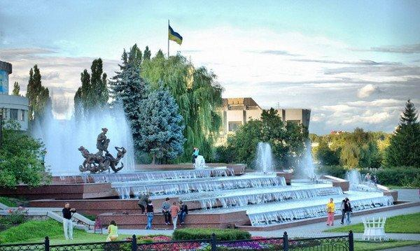
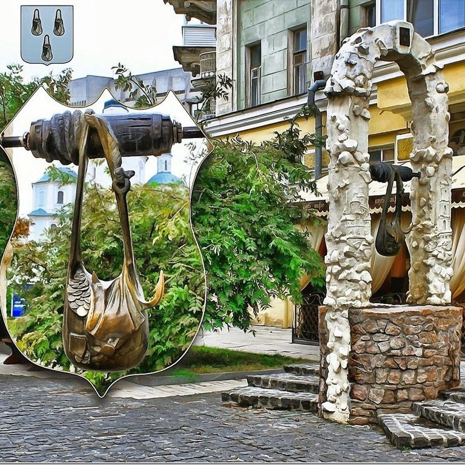
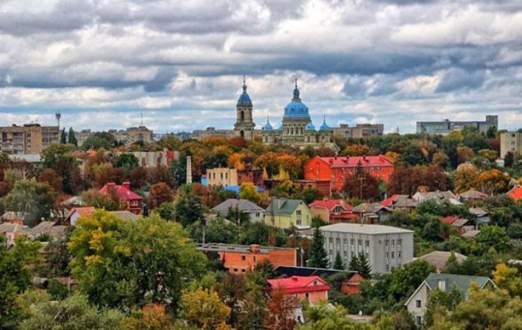

#ЗалишайсяВдома
#МийтеРуки
#НосітьМаски
#УникайтеЛюднихМісць
#ЇжтеВітаміни
#ЗбагачуйтеЗнання
#ВигулюйтеСобак
#НосиРукавички
#АнтисептикУдопомогу
#ГРЕЧКА
#Короновірус
#ЖивиТаНеХворій
#ЗаймайсяСпортом
#МийтеРуки
#НосітьМаски
#УникайтеЛюднихМісць
#ЇжтеВітаміни
#ЗбагачуйтеЗнання
#ВигулюйтеСобак
#НосиРукавички
#АнтисептикУдопомогу
#ГРЕЧКА
#Короновірус
#ЖивиТаНеХворій
#ЗаймайсяСпортом
Суми — місто обласного значення в північно-східній частині України, на Слобожанщині,
адміністративний центр Сумської міської громади, Сумського району і Сумської області.
Місто лежить на берегах річки Псел при впадінні до неї річки Сумки.
Населення міста становить 263 тис. осіб, площа — 95,4 км².
адміністративний центр Сумської міської громади, Сумського району і Сумської області.
Місто лежить на берегах річки Псел при впадінні до неї річки Сумки.
Населення міста становить 263 тис. осіб, площа — 95,4 км².
Суми маленьке місто великих вражень
Сумська область – область, що знаходиться на Північному Сході України з адміністративним центром у місті Суми.
В Україні межує з Чернігівською, Полтавською, Харківською областями; на кордоні – з Російською Федерацією.
Сумщину у VII-X ст. населяли сіверяни, одне зі слов’янських племен. Далі територія входила до складу Київської Русі, а XIV ст. належала Великому князівству Литовському.
Тривалий час перебувала у складі Гетьманщини, а 1795 року увійшла до складу Російської імперії. Сучасна Сумська область була створена 1939 року і відтоді змін не зазнавала.
В Україні межує з Чернігівською, Полтавською, Харківською областями; на кордоні – з Російською Федерацією.
Сумщину у VII-X ст. населяли сіверяни, одне зі слов’янських племен. Далі територія входила до складу Київської Русі, а XIV ст. належала Великому князівству Литовському.
Тривалий час перебувала у складі Гетьманщини, а 1795 року увійшла до складу Російської імперії. Сучасна Сумська область була створена 1939 року і відтоді змін не зазнавала.


Адміністративним центром області є місто Суми. Поселення засновано 1652 року і спочатку мало назву Сумина слобода.
Але 1656 року слобода отримала статус міста, яке стало називатись Сумин.
В наступні декілька десятиліть кінцевий «н» перестав вживатись і місто отримало свою сучасну назву.
Назва міста часто пояснюється легендою про те, що на березі річки Сумка перші мешканці поселення знайшли три сумки з золотими монетами.
Ця легенда увіковічнена в міській символіці, а 2008 року у місті було встановлено пам’ятник «Сумка».
Але 1656 року слобода отримала статус міста, яке стало називатись Сумин.
В наступні декілька десятиліть кінцевий «н» перестав вживатись і місто отримало свою сучасну назву.
Назва міста часто пояснюється легендою про те, що на березі річки Сумка перші мешканці поселення знайшли три сумки з золотими монетами.
Ця легенда увіковічнена в міській символіці, а 2008 року у місті було встановлено пам’ятник «Сумка».
Також містами обласного значення є Глухів, Конотоп, Лебедин, Охтирка, Ромни, Шостка.
Сумська область є частиною Лівобережної України.
Тут збереглось чимало історико-культурних пам’яток, характерних саме для цієї території, зокрема Трьох-Анастасіївський кафедральний собор та Будинок Терещенко (м. Глухів), Палац Лещинських (с. Кияниця), «Круглий двір» в Тростянці, Оборонний храм Гамаліївка (Конотопський район).
Також на Сумщині можна знайти унікальні природні об’єкти, наприклад яблуню, якій уже понад 200 років (м. Кролевиць), та озеро Шелехівське, яке утворилось ще за часів льодовикового періоду.
Сумська область є частиною Лівобережної України.
Тут збереглось чимало історико-культурних пам’яток, характерних саме для цієї території, зокрема Трьох-Анастасіївський кафедральний собор та Будинок Терещенко (м. Глухів), Палац Лещинських (с. Кияниця), «Круглий двір» в Тростянці, Оборонний храм Гамаліївка (Конотопський район).
Також на Сумщині можна знайти унікальні природні об’єкти, наприклад яблуню, якій уже понад 200 років (м. Кролевиць), та озеро Шелехівське, яке утворилось ще за часів льодовикового періоду.

Цікаві факти про Сумську область
- Сумська область складається з 18 районів;
- Загальна кількість населених пунктів в області – 1493;
- Річки Сумської області належать до басейну Дніпра;
- найзначніші з них – Десна, Сейм, Сула, Псел, Ворскла;
- Найвища точка Сумської області – 246,2 м над рівнем моря;
- Територія Сумської області на 17% складається з лісів та чагарників;
- На території області знаходиться 13 лижних баз, тоді як на Івано-Франківщині – лише 6;
- Сумщина дала найбільше призерів Зимових Олімпійських ігор та Чемпіонатів світу з біатлону.